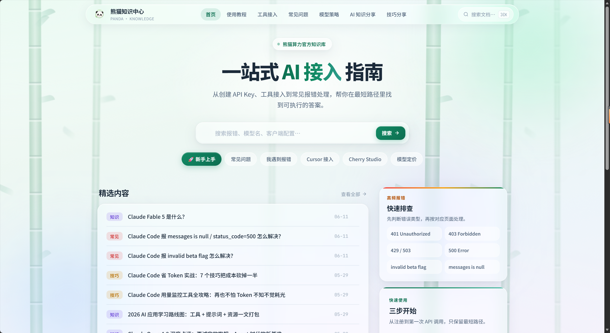
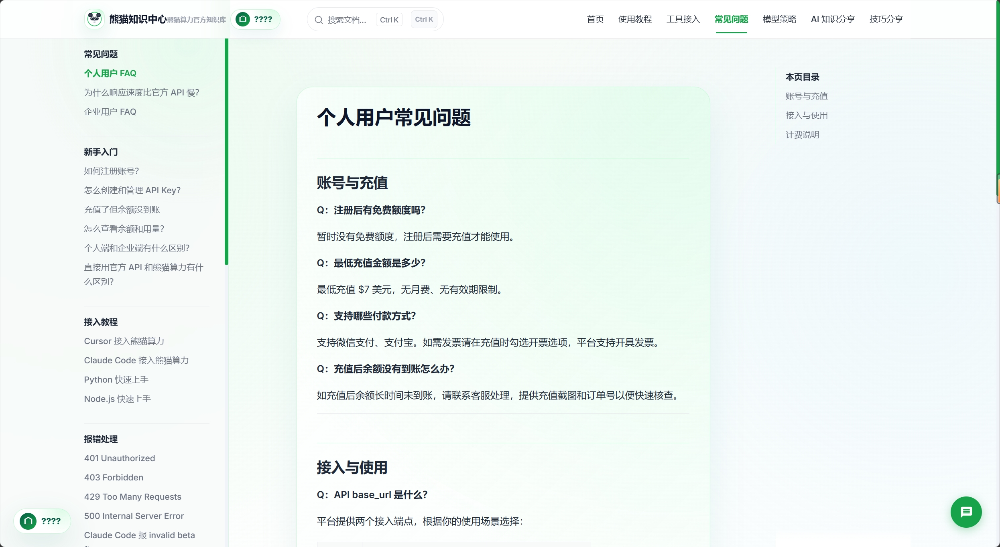
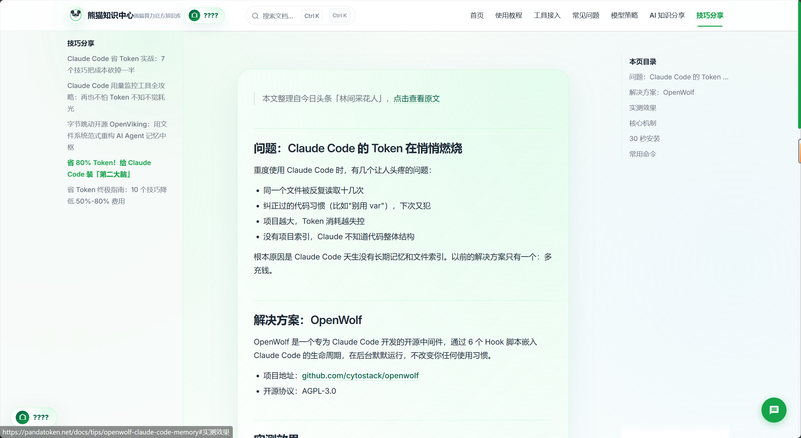
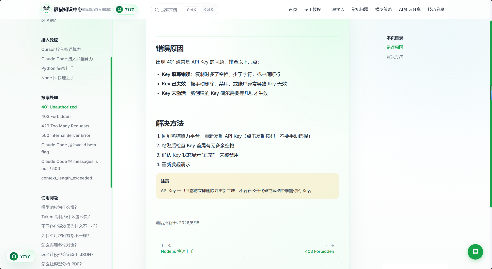

知识中心页面预览
搜索、导航、精选内容和报错排查入口共同组成用户自助路径。
面向开发者的模型接入与选型决策平台。围绕模型选择困难、信息分散和客服重复答疑问题，设计真实知识中心、模型选型助手、信息架构和选型规则。
项目三定位为真实知识中心 + 模型选型助手 + 信息架构与选型规则设计。
以下截图来自熊猫知识中心真实页面，展示了知识中心在搜索、分类导航、常见问题、教程文章和使用技巧内容上的实际承载能力。截图内容已按作品集展示场景处理。

首页提供全站搜索、顶部导航、快捷入口、精选内容和高频报错快速排查，帮助用户从 API 接入、工具配置、模型定价和报错排查中快速找到路径。

FAQ 页面采用左侧分类导航、正文问答、右侧目录的结构，承接账号充值、API 接入、计费说明、报错处理等高频问题，降低重复咨询成本。

技巧文章用于沉淀深度使用经验，例如 Claude Code 省 Token 实践、用量监控、成本优化等内容，帮助用户从“能接入”进一步过渡到“会使用、会优化”。

报错页面把 401 等高频问题拆成错误原因、解决方法、注意事项和上下篇导航，帮助用户自助排查 API Key、权限和配置问题。
模型选型助手用于把“我该用哪个模型”的模糊问题转化为结构化判断。用户先选择任务场景，再补充效果、速度、成本、稳定性和推荐方式等偏好，系统据此生成推荐方案。
项目三的核心不是简单堆文档，而是把用户在模型接入、工具配置、价格理解、报错排查和模型选择中的高频问题，组织成可搜索、可导航、可推荐、可持续更新的知识服务系统。
高保真预览用于补充说明页面结构与交互意图，真实截图用于证明项目已落地到实际页面。
搜索、导航、精选内容和报错排查入口共同组成用户自助路径。
把任务场景、偏好、稳定性和推荐方式变成可解释的主推与备选方案。
PandaToken 接入的模型和渠道不断增加，用户在选择模型时容易遇到信息分散、参数复杂、场景匹配困难的问题。因此设计熊猫知识中心和模型选型助手，帮助用户快速理解模型差异并完成选型。
信息架构按真实页面导航和用户问题路径组织，避免知识中心变成零散文章集合。
规则不是替用户做绝对判断，而是把用户决策路径结构化，让推荐结果有明确理由。
即使当前真实截图主要展示选型输入页，作品集中也需要说明推荐结果页如何结构化输出。
知识库不是资料堆积，而是要把用户决策路径结构化，让用户更快完成选择。这个项目让我更关注信息架构、规则解释和用户自助路径之间的关系。